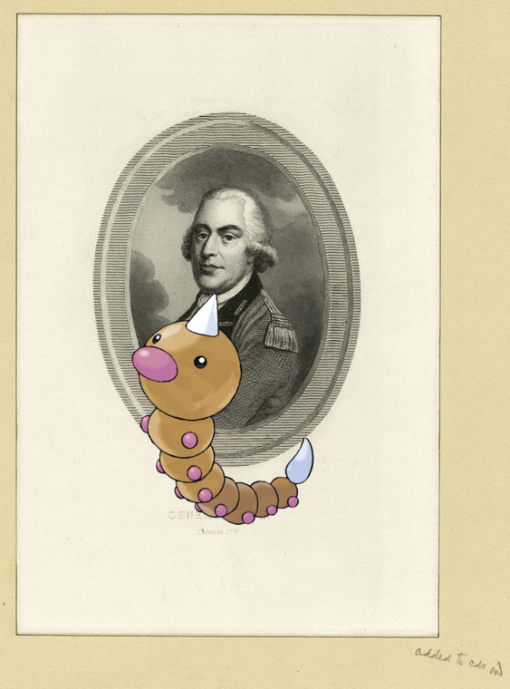

Pokémon in the NYPL archives
2018-1-27 08:10:08
Petilil, Gliscor –
DINNER [held by] NIPPON YUSEN KAISHA [at] EN ROUTE ABOARD SS. KASUGA (SS;)
!
2018-1-27 06:10:13
Hippowdon on
Double Page Plate No. 9, Part of Section 11, Borough of the Bronx: [Bounded by E. 182nd Street, Bronx Park South, Boston Road, E. 180th Street, (Bronx River) Bronx Street, E. Tremont Avenue and Mapes Avenue]
.
2018-1-27 04:10:12
Wurmple ;
Bronx, V. 10, Plate No. 34 [Map bounded by Washington Ave., E. 163rd St., Eagle Ave., E. 161st St.]
.
2018-1-27 02:10:10
Tyranitar +
27TH ANNUAL BANQUET [held by] NATIONAL WHOLESALE DRUGGISTS ASSOCIATION [at] "HOTEL CHAMBERLIN, OLD POINT COMFORT, VA" (HOTEL;)
!
2018-1-27 00:10:05
Feebas |
[B-B]
.
2018-1-26 22:10:05
Virizion –
Rue de la Citadelle, Citadel Street
.
2018-1-26 20:10:06
Buneary on
Index to map of the city of Brooklyn and East New York. [Front]
!
2018-1-26 18:10:10

Weedle |
General Gage.
!
2018-1-26 16:10:04
Magnezone –
Kirchdorf.
!
2018-1-26 14:10:06
Tyranitar ;
Irving W. Snyder, Yours fraternally W. Irving Snyder. Jan. 1875
.
1
|
0
![Petilil, Gliscor @ DINNER [held by] NIPPON YUSEN KAISHA [at] EN ROUTE ABOARD SS. KASUGA (SS;) http://digitalcollections.nypl.org/items/a8511050-c539-012f-1d75-58d385a7bc34](media/finding-IwSPAjDW.png) Petilil, Gliscor – DINNER [held by] NIPPON YUSEN KAISHA [at] EN ROUTE ABOARD SS. KASUGA (SS;)!
Petilil, Gliscor – DINNER [held by] NIPPON YUSEN KAISHA [at] EN ROUTE ABOARD SS. KASUGA (SS;)!![Feebas + [B-B]. http://digitalcollections.nypl.org/items/47760530-c6bc-012f-3733-3c075448cc4b](media/finding-EArzOUfM.png) Feebas | [B-B].
Feebas | [B-B].![Buneary on Index to map of the city of Brooklyn and East New York. [Front]. http://digitalcollections.nypl.org/items/cdadbdf0-c5fa-012f-3d04-58d385a7bc34](media/finding-uuAajJdW.png)